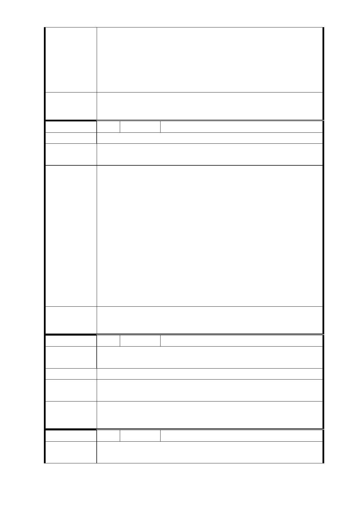

最小轉彎半徑之限制，致其部分路段須穿越民房下方。惟為
考量民眾權益，本局已進一步研析配合廣慈博愛院 R03 車站
西移 25m，以及調整局部軌道線形後，其地下穿越民房棟數已
由原規劃 12 棟減少為 5 棟，隧道結構體之地下穿越面積亦由
2200 ㎡大幅減少至 733 ㎡。
委 員 會 決 議 同「市府回應意見」。
編 號 27 陳情人 黃信泰（地下穿越）
陳 情 理 由 堅決反對捷運穿越民宅，損害善良民眾權益。
建議辦法
請充份利用公家土地（廣慈）多做幾個月台，停放列車就可，
不用浪費納稅人錢。不要照顧財團。
信義線東延段係接續捷運信義線象山站尾軌東端採地下化方
式、高運量系統繼續向東沿信義路六段、福德街、中坡南路
延伸至玉成公園止。有關建議儘量使用廣慈公有地，多做幾
個月台停放列車乙節，經評析若 R03 車站站體北側於廣慈園
區內增設儲車側線，或可免設置尾軌，因捷運站體（含前端
市
意
府
回
應
見
橫度線）須為直線段且採明挖覆蓋工法施作，將涉及林口街
至福德街 84 巷間臨福德街 2 排連棟 4R 民房之拆遷，影響衝
擊甚大，且儲車空間僅能儲放 2 列車不敷營運調度需求，軌
道線形佈設亦不利列車調度等問題。惟為考量民眾權益，本
局已進一步研析配合廣慈博愛院 R03 車站西移 25m，以及調
整局部軌道線形後，其地下穿越民房棟數已由原規劃 12 棟減
少為 5 棟，隧道結構體之地下穿越面積亦由 2200 ㎡大幅減少
至 733 ㎡。
委 員 會 決 議 同「市府回應意見」。
編 號 28 陳情人 黃雅君（地下穿越）
陳情理由
堅決反對捷運穿過住宅，房子老舊，施工若造成損壞是所有
人的損失。
建 議 辦 法 建議修正一點，從中坡南路的馬路下經過，不要從住宅地方。
市府回應
意見
同編號 26 研析意見。
委 員 會 決 議 同「市府回應意見」。
編 號 29 陳情人 黃隆勝（地下穿越）
陳情理由
堅決反對圖利財團，廣慈那邊怎麼不經過，拿老百姓來開刀，
人民有居住自由。
- 107 -